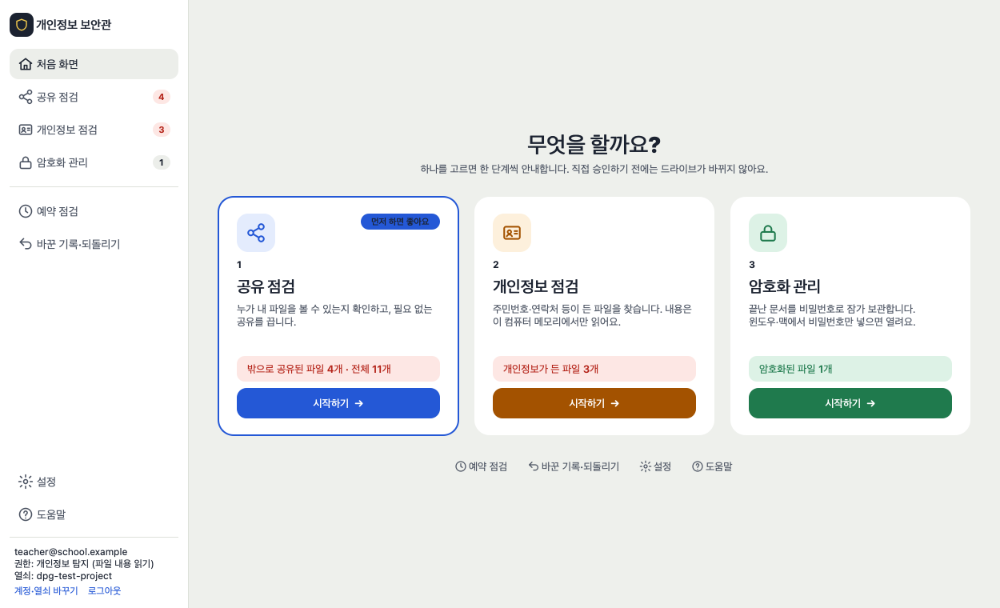
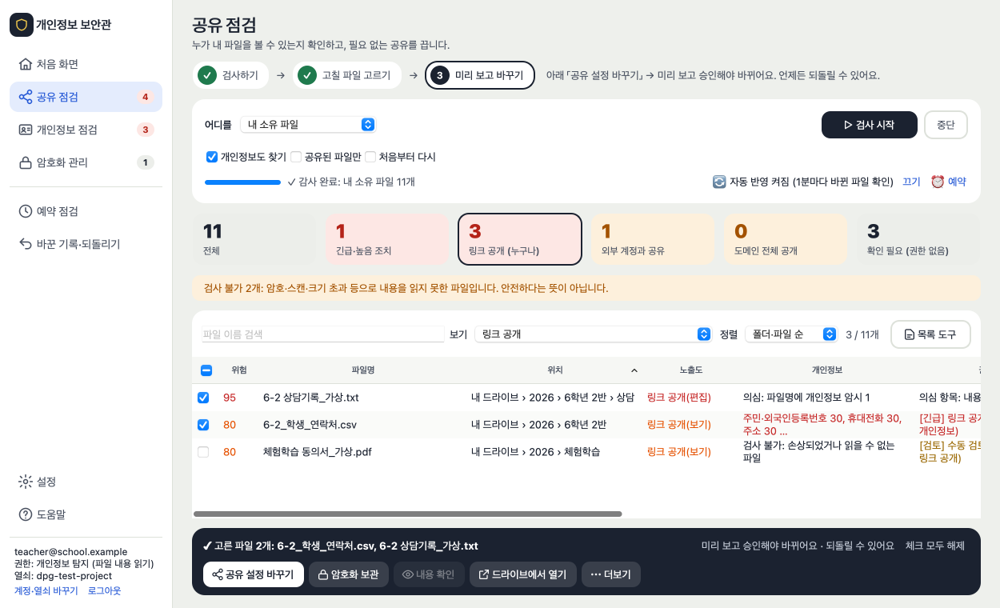
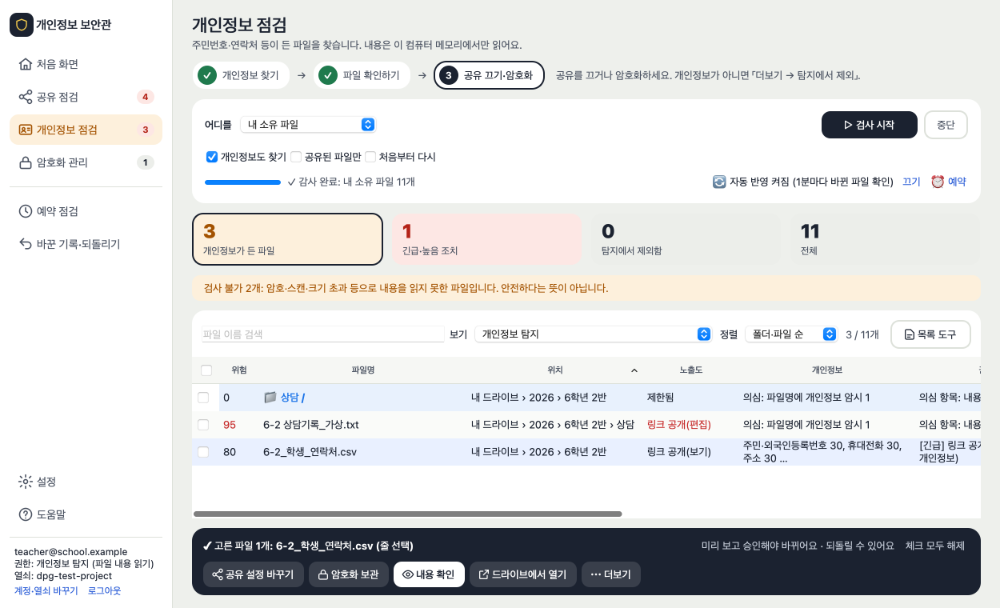
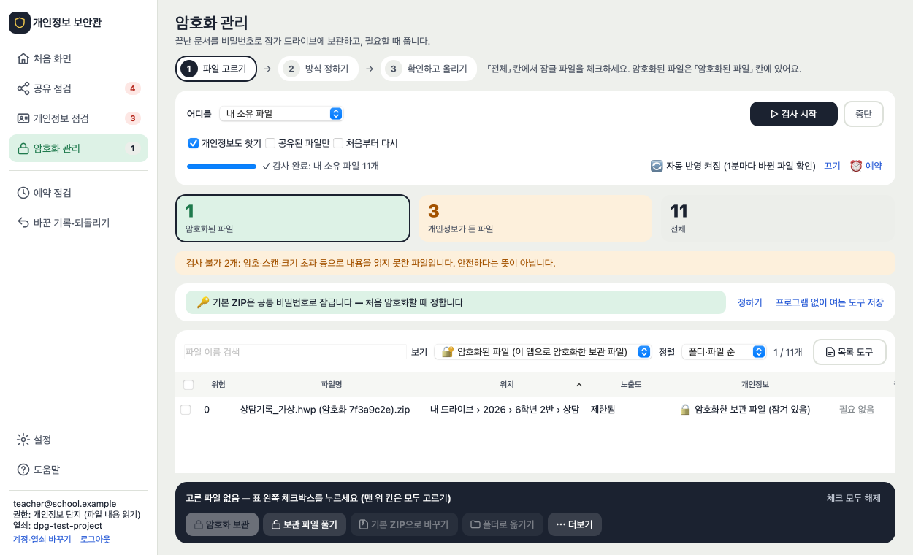
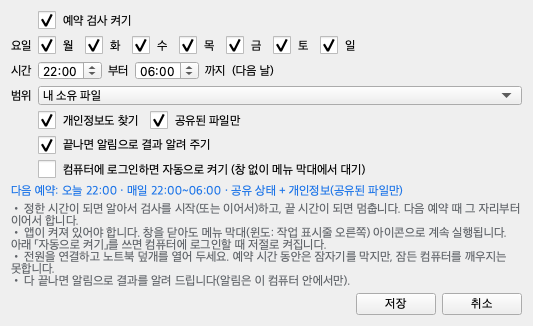

데스크톱 앱 사용법
Mac·Windows 앱은 내 드라이브 전체를 검사합니다. 왼쪽 메뉴에서 할 일을 고르면, 화면 위 ① → ② → ③ 단계가 지금 할 일을 한 줄로 알려 줍니다.
처음이면 구글 설정부터검사는 읽기만 — 드라이브를 바꾸지 않음
-
처음 화면 — 무엇을 할까요?

- 할 일 3가지가 카드로 나오고, 카드마다 지금 상태(밖으로 공유된 파일·개인정보가 든 파일·암호화된 파일 수)가 보입니다.
- 시작하기를 누르거나 왼쪽 메뉴에서 고릅니다. 처음이면 공유 점검부터.
-
공유 점검

- ① 검사하기: 「어디를」에서 「내 소유 파일」(전체) · 「링크로 공개된 내 파일만 (빠름)」 · 「나에게 공유된 파일」 · 「공유 드라이브」 · 「특정 폴더」를 고르고 ▷ 검사 시작. 두 번째부터는 바뀐 파일만 확인해 금방 끝납니다.
- ② 고칠 파일 고르기: 숫자 칸(링크 공개, 외부 계정과 공유…)을 누르면 그 파일만 목록에 보입니다. 파일 이름 옆에 전체 폴더 경로가 나옵니다. 고칠 파일의 왼쪽 칸을 체크하세요.
- ③ 미리 보고 바꾸기: 아래 검은 막대의 공유 설정 바꾸기. 무엇이 바뀌는지 먼저 보여 주고, 알림 메일은 보내지 않습니다. 왼쪽 「바꾼 기록·되돌리기」에서 되돌릴 수 있습니다.
파일이 아주 많으면 먼저 「링크로 공개된 내 파일만」으로 몇 분 만에 가장 위험한 파일을 확인하세요. 전체 검사는 중단해도 다음에 이어서 합니다.
-
개인정보 점검

- ① 개인정보 찾기: 이 화면에서는 「개인정보도 찾기」가 켜져 있습니다. 파일이 많으면 공유된 파일만을 체크해 밖으로 나갈 수 있는 파일부터.
- ② 파일 확인하기: 파일을 고르고 내용 확인 — 찾은 위치를 가려서 보여 줍니다(원문은 저장하지 않음). 드라이브에서 열기로 직접 볼 수도 있습니다.
- ③ 공유 끄기·암호화: 같은 막대에서 공유를 끄거나 암호화합니다. 개인정보가 아니면 탐지에서 제외.
-
암호화 관리

- ① 파일 고르기: 「전체」 칸에서 잠글 파일을 체크하고 암호화 보관.
- ② 방식 정하기: 기본 ZIP(추천) — 윈도우·맥에서 두 번 누르고 공통 비밀번호만 넣으면 열립니다(프로그램 필요 없음, 압축 안 파일 이름은 보임). 높은 보안 7z — 파일 이름까지 숨기지만 이 프로그램·7-Zip·Keka가 있어야 열립니다(복구 키).
- ③ 확인하고 올리기: 암호화 → 풀어서 원본과 비교 → 올리고 다시 받아 확인이 모두 통과해야 원본이 휴지통으로 갑니다(30일 안에 되살리기).
- 풀 때는 「암호화된 파일」 칸에서 체크 → 보관 파일 풀기. 예전 7z는 기본 ZIP으로 바꾸기로 바꿀 수 있습니다.
공통 비밀번호는 처음 암호화할 때 정합니다(8자 이상, 영문·숫자·기호). 종이에 적어 두세요. 화면 위쪽 줄에서 보기·바꾸기.
-
예약 점검

- 왼쪽 예약 점검(또는 파일 → 예약 검사…)
- 요일·시간(예: 매일 22:00~06:00)·범위를 정하면 그 시간에 알아서 시작하고, 끝 시간에 멈춘 뒤 다음 날 이어서 합니다. 끝나면 알림.
- 창을 닫아도 메뉴 막대(윈도: 작업 표시줄 오른쪽)의 ★ 아이콘으로 계속 실행됩니다. 「컴퓨터에 로그인하면 자동으로 켜기」도 고를 수 있습니다(Mac은 앱이 「응용 프로그램」 폴더에 있어야 함).
- 전원을 연결하고 노트북 덮개를 열어 두세요. 잠든 컴퓨터를 깨우지는 못합니다.
-
계정·열쇠 바꾸기
- 왼쪽 아래에 로그인한 계정과 열쇠: (프로젝트 이름)이 보입니다.
- 다른 계정으로 쓰거나 새 로그인 열쇠로 바꾸려면 계정·열쇠 바꾸기. 드라이브 파일·암호화 파일·비밀번호는 그대로입니다.
알아 두기
🔄
자동 반영
앱이 열려 있으면 1분마다 바뀐 파일만 확인합니다. 검사 칸 오른쪽 「끄기/켜기」. 파일이 5만 개를 넘으면 자동으로 쉽니다.
🔑
Mac 키체인
업데이트 후 처음 열 때 키체인 비밀번호를 물으면 Mac 로그인 비밀번호 → 「항상 허용」.
🛟
프로그램이 없어도
기본 ZIP은 윈도우·맥에서 두 번 누르고 공통 비밀번호만 넣으면 열립니다. 높은 보안 7z는 비밀번호 복구 도구에 복구 키와 파일 이름을 넣어 비밀번호를 만들고 7-Zip·Keka로 엽니다.
🧹
기록 지우기
파일 → 설정 → 「모든 기록 삭제」는 이 컴퓨터의 검사 기록·로그와 예약·자동 실행을 지웁니다.